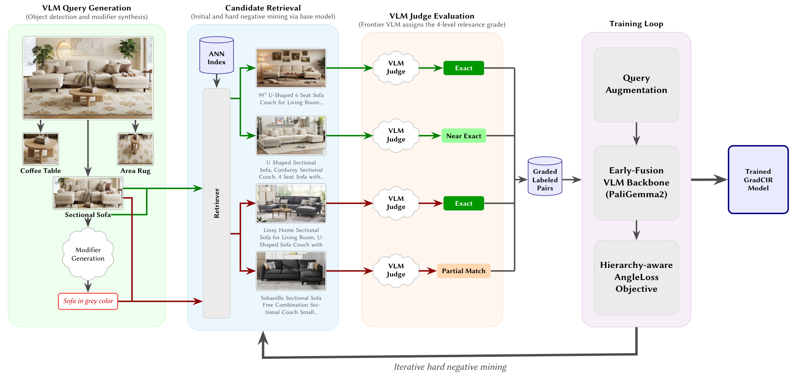
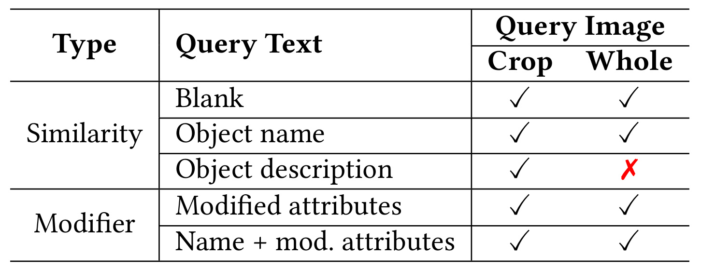
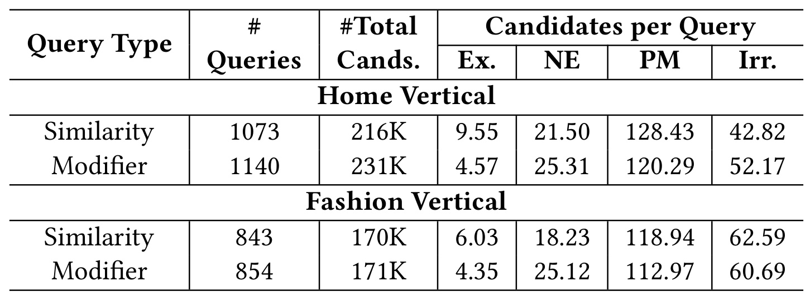
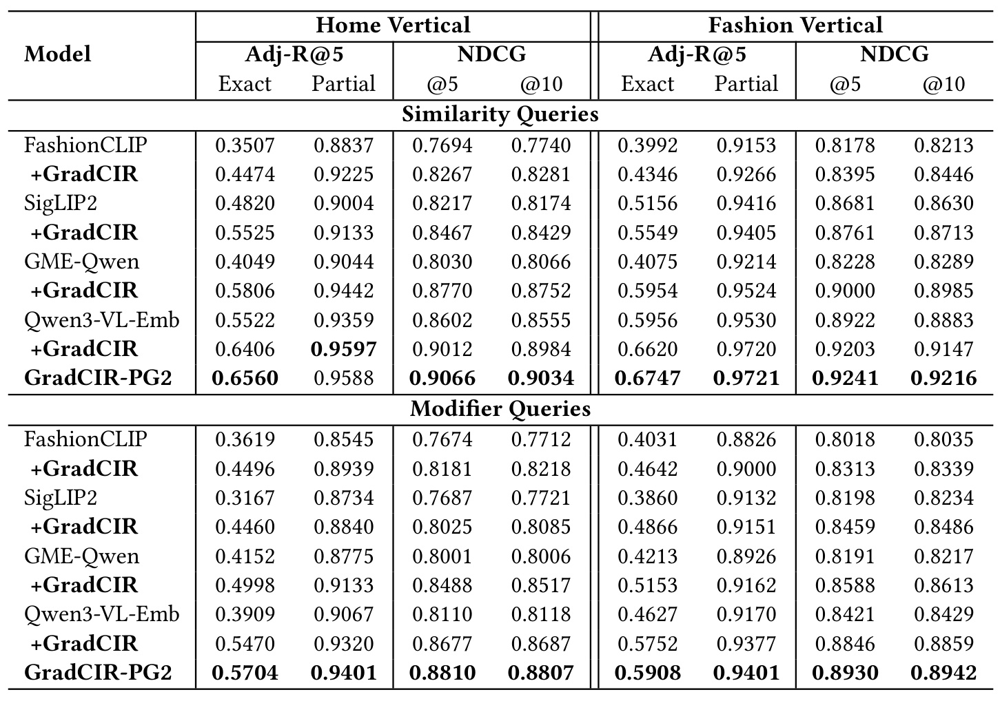
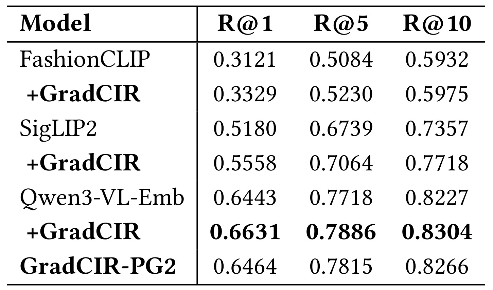
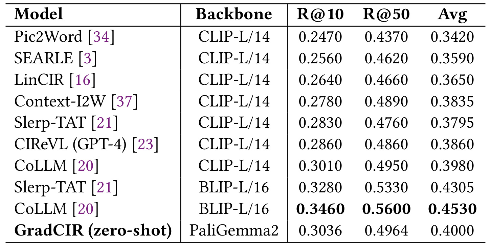
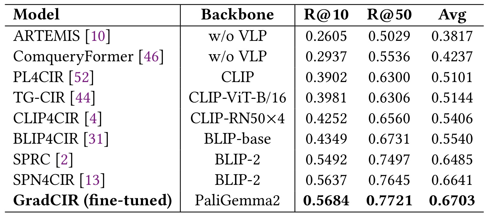
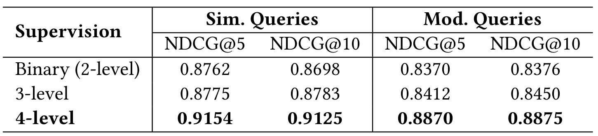
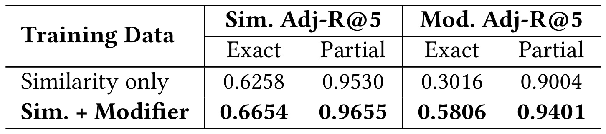

Walmart-GradCIR：把商品视觉检索的部分匹配变成可学习的等级
论文：Graded-Relevance Composed Multimodal Retrieval for E-commerce Visual Search at Scale
作者：Anubhav Gupta、Hrushikesh Mohapatra、Prijith Chandra、Asish Mohapatra、Anuj Garg、Arvind Maan、Sudip Datta、Venkat Bulusu、Sitesh Kumar Jalan
机构：Walmart Global Tech
发布时间：2026-09-21，arXiv v1；阅读日期：2026-09-23
来源：arXiv论文入口
代码状态：未核验到独立代码或项目链接。结果来自论文披露，本笔记未运行训练复现。
1. 背景和问题
既有组合图像检索通常将相关性简化为二元标签，并用只有一个正确目标的三元组训练；真实商品目录中却存在大量部分满足用户请求的候选，而这些候选之间的匹配程度排序直接影响搜索体验。这正是摘要和引言提出的问题。用户给出一张灰色天鹅绒三人沙发的图片，候选商品可能是完全相同的沙发、米色的相近款式、普通灰色三人沙发，也可能是同样天鹅绒材质的扶手椅。把后三类全部压成负例，模型就失去了替代商品之间的区别；把前几类全部压成正例，又无法说明应该把哪一个排到第一位。论文希望保留的，是这种有序而非简单排他的相关性。
视觉搜索里还有两种不同请求。第一种是“找相似商品”，图片主要给出颜色、形状、材质和风格，文字可能只是商品类别。第二种是“保留这个参考物体，但修改某些属性”，例如换成灰色、改成条纹或者调整风格。这种图片与修改文字共同决定目标的任务称为组合图像检索。后一种请求尤其容易被纯视觉相似度误导：参考图片里的颜色可能恰好是需要替换掉的属性；如果编码器仍然把它当成必须保留的信号，就会找回看起来很像、却违背明确修改要求的物品。反过来，只看修改词也会丢掉未被修改的商品形态和用途。
作者把任务限定在电商目录中的单件可售商品检索。系统通常分为召回器和排序器，召回器把查询和商品映射到向量空间，并通过近似最近邻搜索拿到候选，排序器再决定最后的展示顺序。这篇工作研究召回器，其生产部署仍然保留现有文本重排器。因此，文中的“排序质量”主要指召回向量诱导的候选顺序，并不意味着整个检索排序链路都被一个模型取代。这个边界决定了结果该如何阅读：离线向量相关性变好是有价值的，但最终用户体验还受到重排、库存、商品质量和展示策略影响。
真实商品目录带来三个互相牵制的困难。首先，用户上传照片可能有遮挡、杂乱背景和非标准视角，而商品图通常清晰、居中且经过整理，二者存在输入分布差异。其次，目录达到上亿商品规模时，不能对每个候选在线运行一个大模型交叉编码器，必须预先编码商品并保留向量检索的服务形式。再次，标签不能只描述“找到了唯一同款没有”，因为线上经常根本没有完全同款，而相近替代品仍然可能满足购买意图。模型需要在有限维度的向量里同时编码组合语义、可替代性和相关性层次，不能单靠增大候选集合解决。
论文选择四个顺序等级：完全匹配、近乎完全匹配、部分匹配和不相关。附录提示词进一步说明，文字可以覆盖参考图中的少数属性，没有被覆盖的属性仍然属于查询意图；判断应围绕商品用途和规格，而不是照明、背景或摄影角度。完全匹配要求各主要规格和视觉外观对齐，近乎完全匹配允许细微品牌、色调或样式差异，部分匹配保留商品类型与用途但存在更大属性差别，不相关则包括类型或用途错误等情况。这套规则是业务语义的显式定义，并非从点击日志里自然推断得到的偏好，也不是一个普遍适用于所有零售场景的客观尺度。
尤其需要注意，某些属性的地位依赖品类。附录将年龄、性别或尺寸不适配列为可能不相关的情形，同时又允许部分匹配存在一些尺寸、材料等差异。这样的规则在实际标注中需要结合用途解释：装不进指定空间的家具和仅有轻微视觉差别的家具，不能都简单归为“尺寸变化”。论文公开了提示词，但没有在正文给出按属性分组的人类一致性审计。因此，四级标签的可读性不等于它们天然没有歧义，模型学习到的是给定裁判与规则共同产生的相关性判断。
技术上，作者把贡献放在一条训练方法链上，而不是发明新的视觉语言骨干。强视觉语言模型先生成查询、判断候选相关性，再由正在训练的召回器发现难例，把这些难例回送给裁判，最后用能够利用等级顺序的角度损失训练较小的早期融合模型。这样做的价值在于让昂贵的理解与标注工作主要发生在离线阶段，线上保留共享编码器与向量索引。与依赖人工逐对标注的方案相比，它扩大了数据覆盖；与只生成一个正确目标的合成三元组相比，它保留了多个候选之间的细粒度差异。
阅读证据时应区分三个层次。最接近因果解释的是固定骨干和训练数据、只改变标签粒度的消融；多个骨干微调前后的提升说明整套方法有一定可迁移性，但混合了领域数据和训练目标的贡献；公开数据集的迁移结果有助于检查内部评测之外的效果，不过它们大多仍是二元目标协议，无法直接证明四级判断与真实消费者偏好一致。生产部分则证明作者报告了实际服务接入，尚未提供点击、成交或时延变化的量化实验。把这些层次分开，才能避免将一个可信的召回学习方法扩大成已经证实的全链路商业收益。
分级也改变了训练样本的价值判断。一条被粗粒度规则归入负类的商品，如果与目标具有相同用途、只缺少某个关键视觉属性，它提供的信息可能比随机错误类别更丰富。原先的单正例目标容易把二者当成相同的排斥对象，导致模型只学到类别分离而没有学到类别内部的细微顺序。本文试图保留这些差别，但它并不消除查询歧义：当用户没有说清某个属性是否可以替代时，裁判仍然必须依靠业务规则作出判断。因此，标签定义与负例采样同样属于模型设计的一部分，不能被当作训练之前无关紧要的数据准备。
2. 方法
2.1 查询构造、分级标注与迭代负例
数据管线首先从商品目录图片中检测目标物体，每张商品图最多形成十个相似查询。一个丰富家居场景中可能同时出现沙发、茶几和地毯，裁剪后分别配上检测到的物体名称，可以减少背景混淆。随后，同一个 Gemini-2.5-pro 为这些物体生成属性修改文字，从而得到修改查询。初始多模态召回器为每个查询取出候选，裁判再查看查询图片、查询文字和候选商品信息，给出四级相关性。得到的是带顺序标签的查询—商品对，而不是只指定一个正商品的三元组。

Figure 2 的左侧把一张家居图拆成多个可售对象，绿色路径表示相似查询，红色路径表示带修改意图的查询。中间候选检索模块负责从目录里提出可比较的物品，裁判模块分别为这些物品赋等级，右侧才是使用等级数据训练的召回模型。理解这张图时，最重要的是把提出候选与判定候选分开：召回器负责暴露当前向量空间中的近邻，强模型负责判断这些近邻究竟满足多少查询意图。候选与参考图视觉接近，不保证它满足文字要求；一个颜色正确却形状不合适的沙发，也可能只得到部分匹配。
图的底部回路解释了为什么作者不只运行一次离线标注。初始模型擅长发现的相近物品有限，其候选集合可能缺少后来模型容易混淆的困难样本。训练一轮后，再用新模型检索并去掉已经见过的查询—商品对，能够逐渐补充新的判别边界。作者按留出查询集的十位归一化折损累计增益趋于平台作为停止依据，实际用了三轮，最终得到约三百五十万对，其中约二百一十万来自相似查询，一百四十万来自修改查询。这里的数量是标注对数量，不能当成三百五十万个独立用户请求，也不能据此推断商品或原始图片同样多。
这种闭环仍然有两条限制。第一，候选集合始终由已有模型产生，不会自动覆盖整个目录的所有可能错误；第二，所有新增候选仍由同一个裁判规则判断，错误标签可能在反复挖掘中被强化。图中没有人类标注校正模块，也没有展示标签不确定性进入损失的通路。因而它是扩大有用难例覆盖的工程机制，并非保证数据无偏的证明。复用时值得保留独立人工抽检集，并对近乎完全匹配与部分匹配的边界做品类检查，这属于基于机制的后续建议，不是论文已完成的实验。
对迭代后的训练集合，可以沿论文的集合表达写成：
符号解释：$q$是图片和文字构成的查询，$p$是候选商品，$\phi$是四级裁判，$C_q$为初始候选，$C_q^{HN}$为迭代挖掘候选，$t$是轮次。集合并运算包含去重步骤；所谓难负例不应误读为新候选全部具有最低等级，裁判仍然对每个候选重新赋予实际等级。

Table 1 具体说明了如何让同一个相关性判断覆盖多种查询输入。对于相似查询，文字可以为空、物体名称或更长的物体描述，图片可以是裁剪物体或完整原图；但物体描述配完整原图的组合没有被纳入。对于修改查询，文字可以只包含被修改的属性，也可以包含物体名称与修改属性，两种文字都与裁剪图和完整图配对。表里的勾叉定义的是作者使用的组合清单，不能把所有可能的图片文字组合都视为训练中出现过。原图已经等于裁剪图、描述等于名称时，作者会去除冗余增强。
增强过程的关键假设是这些输入变化仍然保留同一个检索目标，所以新查询—商品对继承原等级。它可以让编码器避免过分依赖物体名称，同时适应用户既可能上传完整场景、也可能上传紧凑商品图的情况。文本空缺版本要求视觉分支承担更多语义，而仅有修改属性的版本要求模型从图片恢复商品身份。两者训练需求不同，却都可以通过共享编码器完成，这也是把相似检索和修改检索放入统一表示空间的实际支撑。
不过，继承标签并非总是严格成立。完整场景中可能存在多个同类或不同类物品，删除物体名称后，原先明确的查询对象可能变得模糊；描述与名称也可能并不完全等价。论文说明了增强规则，但没有报告每一种增强独立的人类正确率，也没有给出逐增强开关消融。因此，表格能证明作者构造了输入多样性，不能单独证明每种增强都改善最终效果。若要在另一份目录上复现，应检查标签保持假设，而不是简单复制增强数量；在目标物体不明确的样本里，额外标注或限制增强范围可能比无条件扩充更合理。这些风险直接来自表里的信息删减操作，并非对实验结果的否定。
2.2 早期融合共享编码器与嵌套表示
主实现选择约三十亿参数的 PaliGemma2，由约四亿参数的 SigLIP 视觉编码器与约二十六亿参数的 Gemma 2 语言模型连接而成。图片以二百二十四像素分辨率进入视觉编码器，形成二百五十六个图像块标记，文本最长一百二十八个标记。图像块投影到语言模型空间后与文本共同经过变换器，因此修改词可以在内部计算中改变对图片属性的理解。相对地，后期融合模型分别编码图片和文字再求平均，很难明确表达“保留形状但覆盖颜色”这种有方向的组合关系。
共享权重不意味着查询与商品完全对称。作者给两类输入加入不同的角色前缀，使相同模型能够学习查询意图和商品描述的区别。为了得到固定长度向量，模型移除语言生成头，不生成回答，并把整段输入都作为双向可见的前缀处理，取最后一个非填充位置的隐藏状态作为表示。由于没有生成后缀，这个位置可以聚合完整图文上下文；它不是只看左侧局部文本的普通生成过程，也不需要额外添加分类标记池化层。
符号解释：$v$与$w$分别代表图片和文字，$f_\theta$是共享早期融合编码器，$e_q,e_p$是两端向量，$s$是余弦相关性。角色前缀包含在实际输入中。商品向量可提前计算，在线只需编码查询并搜索索引；这一训练与服务分离保持了大目录召回的基本结构。
作者同时采用嵌套表示学习，在一百二十八、二百五十六、五百一十二和一千零二十四维前缀上训练。其意图可以用以下说明性表达概括，原文没有单列这一总和公式，也没有明确各维度损失的不同权重：
符号解释：$e^{[:d]}$表示向量前$d$维，$\lambda_d$表示各维度损失的权重，此处仅用于解释多尺度监督，不将某组权重冒充论文配置。生产索引采用二百五十六维，意味着不同截断长度需要在训练时得到信号，而非训练完随意删除坐标。降低索引维度可以节省向量存储和距离计算，但不能因此认定查询编码器本身也等比例变快。
2.3 跨等级角度排序目标
普通批内负例对比学习倾向于让一个标注正样本胜过其他商品，而等级标签希望保留完全匹配、近似匹配与弱匹配之间的顺序。作者采用已有的 AngleLoss，把高相关训练对的向量夹角压到低相关训练对之下。正文给出的核心目标如下：
符号解释：$(q_a,p_a,r_a)$与$(q_b,p_b,r_b)$是批中的两条带等级训练对，$r_a>r_b$表示前者等级更高，$\Delta\theta$为相应查询与商品向量夹角，$\tau$为温度，实验取零点零五。当高等级对角度反而更大时，指数项增大并产生更强惩罚；同等级对不属于这个严格不等的约束集合。
这里的比较对象是批内两条训练对，而不要求它们来自同一个查询。因此它既要求局部匹配关系正确，也隐含了不同查询之间相似度尺度应具有一定一致性。若某类商品天然难以拍摄或某类修改语义更复杂，跨查询比较可能受到难度差异影响。论文没有把这部分单独改成按查询分组的排序损失，也没有给出跨查询与同查询版本消融，不能在复述时替作者添加这种实现。四级标签一共允许六种高低等级关系；压成二元后，中间等级的多个区别会消失，这才是分级监督产生额外信号的来源。
损失只使用标签的顺序关系，不直接规定完全匹配与近乎完全匹配之间的角度差必须等于后两级差，也不把三、二、一、零当作回归目标。实验的线性增益指标与训练目标在这一点上不同：评价会给等级指定数值收益，训练则强调有序约束。这个区别有助于理解为什么论文需要真正报告排名指标，而不能仅凭训练损失下降断言用户收益。主训练使用低秩适配，秩与缩放参数均为六十四，作用于注意力和前馈层，随机失活零点一，训练两轮、批量五百一十二，学习率为十万分之一，在四张八十吉字节显存的 H100 上使用混合精度和梯度检查点；它没有披露训练总时长或每次裁判标注成本。
3. 实验结果
3.1 数据、指标与内部评测的边界

Table 2 把内部评测拆成家居和服饰两个业务域，每个域再分别统计相似与修改查询。家居包含一千零七十三个相似查询和一千一百四十个修改查询，服饰对应八百四十三与八百五十四个，四组总计三千九百一十个查询。候选数量约为二十一点六万、二十三点一万、十七万和十七点一万，表示查询下参与判断的候选对规模，不能当作互不重复的商品总量。每条查询平均约有两百个被标注候选，来源是多个向量模型召回结果的并集，并非整个上亿目录的逐项标注。
四个等级的分布说明评测为什么需要细粒度指标。例如家居相似查询平均只有九点五五个完全匹配，却有二十一点五个近乎完全匹配和一百二十八点四三个部分匹配；家居修改查询的完全匹配均值下降到四点五七。服饰两类查询也都以部分匹配最多。如果把所有部分匹配算作相关，前几位“多少有点像”的商品很容易带来较高分；如果只观察唯一同款，又会丢失多数候选的可替代关系。表格支持同时报告严格相关阈值与较宽阈值，但也提醒读者这是一份被召回模型预筛过的候选池，随机目录物品的相关分布可能完全不同。
测试查询来自目录商品与用户评论图片的分层抽样，裁剪和相关性标注仍使用 Gemini-2.5-pro。因此，它相对于训练查询是留出的评测数据，却并非一个独立于训练裁判的人类真值体系。相同模型生成的相关性规范可能同时支配训练和评价，这会使符合裁判偏好的表示受益。多模型候选并集能够减少只对单一模型友好的偏差，但仍可能漏掉所有参与模型都没召回的相关商品。该表没有给出人工复核一致率、目录外候选覆盖率或用户行为验证，后续内部高分应在这些限制下解释。特别是不同查询类型的候选难度不等，不能直接用两组分数差距推导一种查询天然容易多少。
内部 Adjusted Recall 的定义值得单独保留：
符号解释：$K$是截断位置，$n_{rel}$是该查询已标注候选池中的相关商品数量。严格口径把完全匹配与近乎完全匹配都算相关，宽口径再纳入部分匹配。它不是以候选池全部相关数为分母的普通召回率，更不是全目录召回率；当相关数很多时，其分母就是$K$。无相关候选的边界处理未在正文展开，复现时需要确认。
按照论文指定的线性增益，归一化折损累计增益可解释为：
符号解释：$r_i$是第$i$位候选等级，$g$为论文采用的线性增益，分母是在同一已标注候选池内理想排序的折损收益。此式是对评价定义的标准展开，不应替换成常见的指数增益而继续声称同一协议。内部结果在这里衡量的是被标注候选池里的顺序，不能与使用不同候选集合、不同收益函数的其他推荐论文直接横向比较。
3.2 内部排序结果与骨干比较

Table 3 的每一对基础模型与微调模型都使用相同的内部测试口径，因此最清晰的阅读方式是先看同一骨干的变化，再看不同骨干的最后水平。以家居相似查询为例，GME-Qwen 的十位归一化增益从零点八零六六升到零点八七五二，而 Qwen3-VL-Embedding 从零点八五五五升到零点八九八四。后者在服饰相似查询中从零点八八八三升到零点九一四七。主实现的家居和服饰对应零点九零三四、零点九二一六，确实在这些排名指标上更高，但差距远小于部分基础模型微调前后的差距。
修改查询上，主实现两业务域的十位指标为零点八八零七与零点八九四二，超过同样方法微调的 Qwen 两个结果零点八六八七与零点八八五九。作者据四种业务域和查询类型组合报告，相对次优方案，严格相关的五位调整召回平均提高约百分之二点八三，十位归一化增益平均提高约百分之零点九一。这些是平均相对提升，不能改写成增加二点八三或零点九一个百分点。表中也不是每个单元格都由主实现获胜：家居相似查询的宽口径调整召回，Qwen 微调版零点九五九七略高于主实现零点九五八八。
这张表对“方法是否只适用于特定骨干”的支持比对“哪一个组件单独有效”的支持更强。四类骨干加入整套方案后总体改善，但同时发生了领域数据训练、等级目标适配和低秩参数更新，不能把所有提升都归功于标签粒度。后期融合的 SigLIP2 与 FashionCLIP 在修改查询上仍落后于早期融合模型，符合需要图文交互的解释，不过骨干预训练、规模和具体融合方式也有差异。正文没有对每个差异做严格同架构控制。因此，可以说结果与早期融合更适合属性覆盖这一假设一致，不能说这张表独立证明了所有差距均来自融合位置。论文也没有在该表报告多随机种子方差或显著性区间，小幅领先应保留这一不确定性。
3.3 街拍到商品的迁移

Table 4 使用街拍图片寻找匹配商品的公开任务，测试集有六千七百七十条街拍查询和九千八百零二张商店候选图。查询端输入图片及其类别标签，商品端也使用图片和类别。它主要检验相似查询以及街拍与目录图片之间的迁移，并不要求理解自然语言修改。三个指标分别看正确商品是否进入第一、第五和第十位，读者不应把这里的普通召回与前面的候选池调整召回混用。它的价值在于测试数据和目标定义脱离了内部四级裁判，能够为迁移提供补充证据。
最值得保留的反例是，主实现并没有在这张表全面领先。经过同样训练方法的 Qwen3-VL-Embedding 第一位召回为零点六六三一，高于主实现零点六四六四，绝对差零点零一六七，也就是一点六七个百分点；第五与第十位也分别略高。主实现与这些结果接近，且明显优于表中部分较弱基础模型，但不能把内部最佳泛化成所有公共基准的最佳。这里还展示了训练方法的迁移效果：SigLIP2 的第一位召回从零点五一八零升到零点五五五八，Qwen 从零点六四四三升到零点六六三一，说明不同表示模型都可能从目录分级训练中获益。
不过，公开任务本身只有指定目标，不能凭它直接验证四级顺序在新域里是否准确。某个模型把几个高度相似替代品排在目标之前，在该协议下仍可能扣分，即使这些替代品对真实用户有价值；相反，成功找到特定目标也不表示模型学会了近似匹配与部分匹配之间的偏好。它更适合回答“分级训练有没有破坏传统同款检索能力，以及是否具有可迁移性”。表中的优势还没有训练成本归一化，主骨干与其他骨干的参数、预训练和服务开销不同，因此不能直接据排名断言哪种选择性价比最好。要做工程选型，需要同时补充在线编码时延、索引资源和业务相关性审计，而论文在这张表里只提供了准确性维度。
3.4 FashionIQ零样本与监督迁移

Table 5 检验的是 Walmart 训练后的模型直接用于 FashionIQ，不再使用该基准训练集微调。这个“零样本”限定于目标基准，模型已经接受过大量目录数据和修改查询训练，不能称为完全没有组合语义监督。评测按连衣裙、衬衫和上衣三个类别平均十位与五十位召回，再报告两者平均。主实现得到零点三零三六、零点四九六四，平均为零点四零零零。在表中以 CLIP-L 为骨干的比较项中，它略高于 CoLLM 的零点三九八零，也高于其他列出的同类方法，这支持论文摘要里带有骨干范围限定的表述。
不能删掉比较范围后写成零样本最优。同表中使用 BLIP-L 的 CoLLM 平均零点四五三零，Slerp-TAT 为零点四三零五，都超过主实现；前者相差五点三个百分点，并不是可以忽略的四舍五入差异。结果显示目录分级训练能够迁移到公开修改查询任务，却仍留有明显提升空间。作者对比较范围的限定是事实解释的一部分，尤其当标题或摘要突出“匹配或超过所有已发表方法”时，必须把后面的模型类别条件一起保留，否则会改变结论。
此外，表中的方法既有不同骨干，也可能采用不同外部训练语料和合成机制，不能把它当作只改变等级标签的受控实验。这里的输入分布仍然接近服饰目录，因此比自然场景组合检索更有利于这一方法。作者未报告 CIRR 与 CIRCO，理由是后两者具有自然场景、多物体和开放式组合，偏离训练目录。这个理由解释了研究范围，却也意味着泛化能力尚未在这些更宽任务上验证。表格带来的可靠结论是特定目录训练方案对服饰组合检索有竞争力，而非已经得到通用视觉语义修改器。未来若用它处理家居多物体场景，需要重新设计查询对象和标注规则，不能只沿用这组公共结果作为保证。

Table 6 改变了训练条件：在目录模型基础上再用 FashionIQ 训练集，以秩六十四的低秩适配训练五轮。主实现十位召回零点五六八四、五十位召回零点七七二一，平均零点六七零三；表中最强的对比项 SPN4CIR 对应零点五六三七、零点七六四五和零点六六四一。平均指标绝对提高零点零零六二，即零点六二个百分点，按相对数计算约百分之零点九三。这属于小幅领先，而不是大幅跨越。两个截断位置都略有改善，使平均分的增加有明确来源，但没有区间估计时，不应自行声称统计显著。
与上一张表合看，目标数据适配带来的变化很大：主实现平均从零点四提高到零点六七零三。不过这并非一个纯粹的分级监督效果，因为目标任务训练、数据分布适配和额外更新同时发生。它证明现有模型可以进一步用于监督组合检索，不能将两张表相减后把全部差额归因于四级标签。表内不同方法的骨干也各不相同，论文并没有在相同基础预训练和相同计算预算下重新实现所有对比方法。因此，恰当表达是“在论文列出的监督方法中领先”，而不是保证任何后续方法或任何资源限制下都成立的最优结论。
这组结果还有一个有用的工程含义：初始分级目录训练并没有让模型只能处理四级内部评价，它保留了在标准单目标协议上适配的能力。但这仍然是服饰任务，未覆盖家具、电器等更复杂的尺寸、功能和兼容性约束。若希望把方法接到新的业务域，应先确认目标数据对修改意图的覆盖，再比较直接目标微调、目录预训练加目标微调两条路线。只有增加这样的控制，才能区分分级预训练带来的初始化优势和单纯更多数据带来的收益。正文未提供这项拆解，因此当前表格最有力的证据是结果竞争力，而不是每个预训练组成部分的独立贡献。
3.5 标签粒度与修改查询消融

Table 7 是全文最接近核心机制验证的实验。三行共享 PaliGemma2 骨干和约三百五十万训练对，比较二级、三级和四级标签；三级把近乎完全匹配与部分匹配合并。两个查询类别的指标均在家居和服饰域上平均。相似查询的十位归一化增益从二级零点八六九八升到三级零点八七八三，再到四级零点九一二五；修改查询则从零点八三七六到零点八四五零，再到零点八八七五。按二级为基准，最终相对提升约百分之四点九一和百分之五点九六，后者在正文常概括为百分之五点九左右。
绝对变化分别是零点零四二七和零点零四九九，不能混成四点九或五点九个百分点。更有解释力的是三级到四级的变化明显大于二级到三级，说明区分两个中间层次在这份评价体系里尤其有用。对于商品检索，近乎完全满足需求和只匹配类别的候选可能都不像随机负例，却不应该被当成同样合适。等级损失能够利用它们的顺序，使前列结果更接近评价时采用的细粒度收益，这正好连接了问题定义、训练约束和观察指标。
这个控制比跨骨干对比更强，但仍不是无条件因果证明。测试集采用同一裁判生成的四级标签，训练保留更细等级与测试规则天然更一致；如果真实用户认为某些属性差异不重要，收益幅度可能变化。论文未报告人类标签下重复这项消融，也未详细给出二级标签合并策略的所有实现边界与多种随机种子波动。因而结论应限定为给定数据、骨干、目标与评测协议下，细分中间相关性等级改善了排序。值得跟进的下一步是用人类判断或真实交互目标重做同样控制，观察等级收益是否仍然稳定，而不是继续增加标签数量并假设级别越多必然越好。标注噪声和类别稀疏都可能让过细等级产生相反作用，本文四级有效并未建立无限细分的规律。

Table 8 比较只训练相似查询与同时训练两类查询，指标是在两个业务域上平均的五位调整召回。修改查询严格口径从零点三零一六升到零点五八零六，绝对增加零点二七九，约二十七点九个百分点，相对增长约百分之九十二点五。这个大数字有明确而有限的含义：在没有对应修改训练的基线之上，补入修改数据显著改善了修改意图检索；它不是全站点击率或交易额增长。宽口径从零点九零零四升到零点九四零一，幅度小得多，说明只找回一般同类商品本来就相对容易，难点是更严格满足修改后的要求。
相似查询也从严格口径零点六二五八升到零点六六五四，约百分之六点三相对改善，宽口径从零点九五三零升到零点九六五五。作者将其解释为修改查询带来的细粒度图文交互监督也帮助普通相似检索。这是合理机制解释，但表格没有单独对等化训练样本数量、训练步数或其他新增样本类型，因此不能排除部分收益来自更多训练数据。要证明修改数据比同等数量的额外相似数据更有效，还需要一个数据量匹配的对照。保留这个边界，并不会削弱表中明确显示的实用收益，而是避免把观察到的相关性提升解释得比实验设计更强。
另外，两个阈值反映不同业务需求。严格口径同时允许完全与近乎完全匹配，宽口径还允许部分匹配；如果用户要求精确规格，宽口径接近满分并不等于搜索已经令人满意。表中修改查询严格分数仍显著低于宽分数，说明精细属性满足仍然有剩余空间。这也解释了为什么作者强调等级排序，而不仅是扩大粗粒度相关集合。对实际系统而言，应该明确哪些品类允许替代、哪些属性不能放松，再决定指标阈值与等级收益。当前消融覆盖两类查询的混合训练，不包含多商品组合指令，也没有证明模型能够在推理时对指定属性施加硬约束。
3.6 服务接入与未披露的效率信息
生产服务把商品提前编码为二百五十六维向量，查询在线编码后执行近似最近邻搜索，再接现有文本重排器。作者说明系统已在 Walmart 的部分视觉搜索流量上运行，并满足生产时延服务要求，但没有给出具体时延分位数、每秒吞吐、部署卡数、单位请求成本或者线上对照提升。因此，这一节可以记为实际部署报告，不能写成已证明低于某个毫秒门槛或已经提升成交率。向量压缩的理论资源优势也不能替代测量，尤其大约三十亿参数的查询编码器仍然需要在线前向计算。
模型评测使用的嵌套向量与生产二百五十六维选择之间，还缺少完整质量—资源曲线。正文没有按四种截断长度列出独立准确率表，也没有披露量化、批处理、索引类型和重排交互的控制。因此，能够复用的是“多维度共同训练后选择较小服务向量”这一设计，而不是某个经过充分验证的最优部署点。论文公布了骨干、低秩适配和主要训练超参数，能够帮助复现方法；私有目录、裁判调用与服务基础设施仍使完整系统结果难以直接重现。
4. 总结
GradCIR 最值得保留的贡献，是把商品检索中的替代程度从评价时的附加规则，推进到训练数据与向量目标里。强视觉语言模型离线生成查询并赋四级标签，训练中的召回器提供新的困难候选，早期融合双编码器用跨等级角度约束学习这些区别。固定骨干与数据的标签消融支持这一设计在内部协议下有效，多骨干与公开任务结果则说明整套方法具有一定迁移能力。它的价值落在可执行的训练方法和证据链上，而不是一个全新骨干或无条件最优的模型宣言。
证据最强的部分是受控标签粒度实验：相似和修改查询都从二级到四级稳定提高，尤其保留中间两级差异有明显帮助。证据次强的是不同骨干微调后的改进，这说明方法并不完全依赖单一主模型，但没有独立拆分数据、损失和领域训练。公开基准给出更独立的迁移检查，同时也明确呈现失败边界：零样本仍落后于若干较强视觉语言骨干方案，街拍任务里同方法的 Qwen 骨干优于主实现。监督 FashionIQ 的领先幅度较小，没有统计区间时应按小幅领先理解。
至少有四项限制会影响后续采用。其一，内部训练与测试都依赖同一视觉语言裁判，等级正确性需要独立人类检验；其二，评测候选是多个召回器结果的并集，尚不能代表全目录覆盖率；其三，输入增强直接继承标签，在目标对象变模糊时可能引入错误；其四，公开任务集中在商品与服饰分布，未证明自然场景或多物体组合能力。此外，角度目标跨查询比较的尺度一致性、等级边界的品类差异、有限随机种子证据和私有数据可复现性，也都值得进一步检查。这些风险分别来自标注、候选、增强、泛化与训练目标，不应该被一个总平均指标掩盖。
后续优先值得补的第一项实验，是构建与模型裁判独立的人工小集合，按品类和属性分层，特别审查近乎完全匹配与部分匹配的分界，再重做标签粒度消融。第二项是固定数据量与训练步数，比较额外相似查询和额外修改查询，明确组合语义监督本身的贡献。第三项是报告四种向量长度、不同索引与重排配置下的质量和真实服务成本，并给出二百五十六维部署点的取舍依据。还可以比较跨查询等级约束与同查询排序约束，以及对标签置信度进行加权，这些是从原机制推导的研究方向，尚不是本文结论。
若在已有检索系统里验证，较稳妥的实验顺序是先定义业务上可解释的等级和属性边界，再用少量标注检查裁判一致性，随后比较等预算二元与分级训练，最后观察完整重排链路和线上行为。这样每一步都能定位收益来自哪里，也能发现等级体系是否和用户容忍度一致。对于不能替代的规格要求，分级相似度还不能代替显式约束或业务过滤。论文自己也指出尚未处理多商品组合查询与推理时显式属性控制，因此不能把“理解修改文字”误认为已经提供了可靠的硬约束满足器。
这篇工作给推荐与搜索的共同启发，是很多看似负例的商品其实携带了可学习的顺序信息，关键在于把这种信息可靠地定义、采集并保留到目标中。它同时提醒我们，训练标签变精细以后，评测独立性反而更重要：如果模型只是更接近自己的裁判标准，内部指标会很好看，却未必对应真实用户认可。现有结果足以支持继续研究分级召回，但线上收益、跨品类稳定性和总成本仍需要新增证据，不能由部署陈述或单一表格替代。